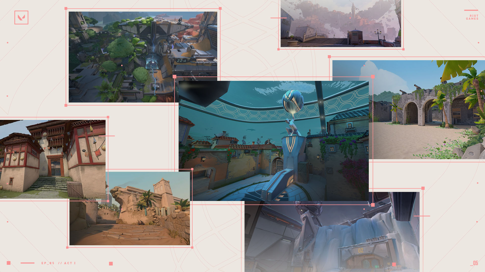

MAPAS A NIVEL COMPETITIVO VALORANT

Bind :
Un mapa que presenta una estructura única con teleportadores que permiten a los jugadores moverse rápidamente entre áreas clave del mapa. Tiene dos sitios de bomba: A y B.
Split :
Un mapa dividido en dos niveles, con pasajes estrechos y áreas cerradas que fomentan enfrentamientos cercanos y estrategias de control de puntos específicos. Tiene dos sitios de bomba: A y B.
Ascent:
Un mapa con un entorno urbano mediterráneo que ofrece una variedad de rutas tácticas y posiciones estratégicas. Tiene dos sitios de bomba: A y B.
Icebox:
Un mapa más abierto y vertical que presenta varias plataformas elevadas y pasajes subterráneos. Tiene dos sitios de bomba: A y B.
Breeze:
Un mapa de estilo tropical con áreas abiertas y amplias, así como pasajes estrechos y áreas elevadas que ofrecen oportunidades tácticas diversas. Tiene dos sitios de bomba: A y B.
Lotus:
Un mapa ambientado en un jardín oriental con elementos arquitectónicos únicos y áreas cerradas que requieren estrategias de juego específicas. Tiene dos sitios de bomba: A y B.
Sunset:
Un mapa que presenta un entorno costero al atardecer, con áreas abiertas y pasajes estrechos que ofrecen una mezcla de enfrentamientos de largo y corto alcance. Tiene dos sitios de bomba: A y B.
MAPAS COMPETITIVOS COUNTER STRIKE 2

Dust II:
Un mapa icónico conocido por su diseño simétrico y equilibrado, con áreas abiertas para enfrentamientos de largo alcance y pasajes estrechos para tácticas más cerradas.
Inferno:
Un mapa urbano con calles estrechas, edificios y pasajes subterráneos que ofrecen una mezcla de combate cercano y tácticas de control de puntos.
Mirage:
Un mapa ambientado en un entorno urbano con edificios, callejones y áreas abiertas, ideal para estrategias de emboscada y control de áreas clave.
Nuke:
Un mapa situado en una instalación nuclear con áreas interiores y exteriores, así como múltiples niveles que requieren coordinación táctica para asegurar objetivos.
Overpass:
Un mapa que combina áreas urbanas con un parque y un canal, ofreciendo una variedad de rutas y puntos estratégicos para ataques y defensas.
Cache:
Un mapa industrial con almacenes, áreas exteriores y pasillos estrechos, diseñado para tácticas rápidas y enfrentamientos intensos.
Train:
Un mapa ambientado en una estación de tren con vías, vagones y edificios circundantes, que ofrece oportunidades para estrategias de flanqueo y emboscada.